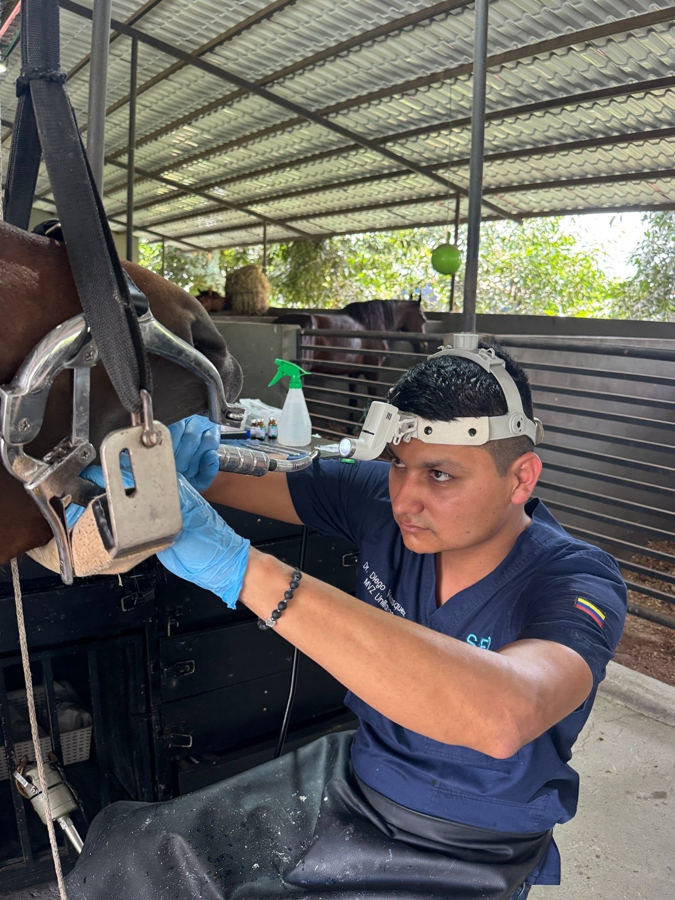

Formación de posgrado
Maestría en cirugía odontológica equina por la Universidade de São Paulo (USP), una de las referencias en la región. Es una especialización poco común en Colombia.
Odontología equina · Colombia
El Dr. Diego Velásquez realiza diagnóstico, odontoplastía y cirugía dental equina con equipamiento especializado, desplazándose hasta donde está el caballo.

Por qué SED
La mayoría de los problemas dentales del caballo avanzan sin signos visibles. Detectarlos y tratarlos exige formación específica y el instrumental adecuado.
Maestría en cirugía odontológica equina por la Universidade de São Paulo (USP), una de las referencias en la región. Es una especialización poco común en Colombia.
El consultorio se desplaza hasta el caballo: radiografía digital, oroscopia y procedimientos quirúrgicos sin el estrés del transporte del animal.
Equipamiento dedicado a odontología equina de alta complejidad: diagnóstico por imagen, técnicas mínimamente invasivas y protocolos quirúrgicos actuales.
Qué tratamos
Cada procedimiento exige conocimiento profundo de la anatomía equina. Seleccione un servicio para ver el detalle.
Casos reales
Casos atendidos en campo. Cada ficha sigue la misma estructura clínica: del problema observado al resultado obtenido.
El especialista
Médico Veterinario y Zootecnista con maestría en cirugía odontológica equina por la Universidade de São Paulo (USP), en Brasil — uno de los centros de referencia en la disciplina en la región.
Atiende haras de cría y caballos deportivos, con un enfoque que prioriza el diagnóstico preciso y el bienestar del animal en cada procedimiento.
Testimonios
Espacio reservado para el testimonio real del propietario del haras.
Espacio reservado para el testimonio real del propietario del haras.
Espacio reservado para el testimonio real del propietario del haras.
Los testimonios se completarán con casos reales autorizados por los propietarios.
Cuéntenos los signos que observa. Le indicamos si requiere atención odontológica y coordinamos la visita a su haras.